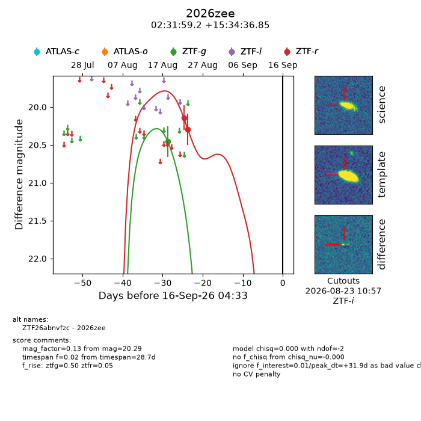
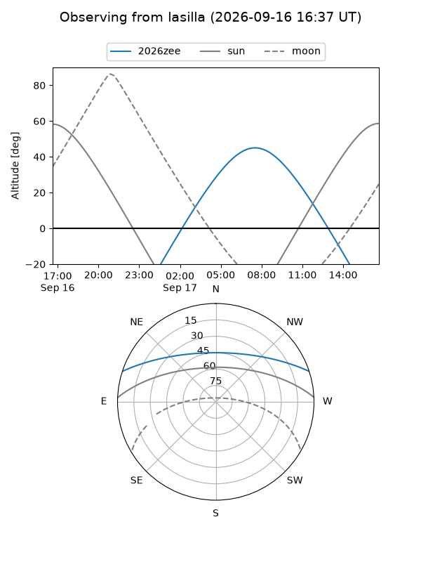
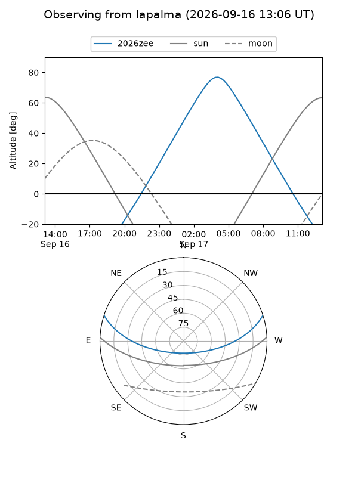
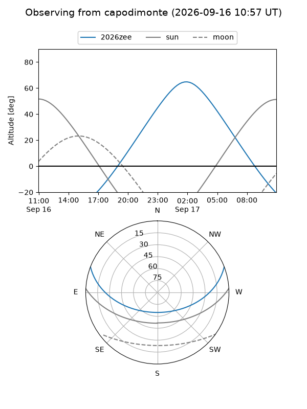
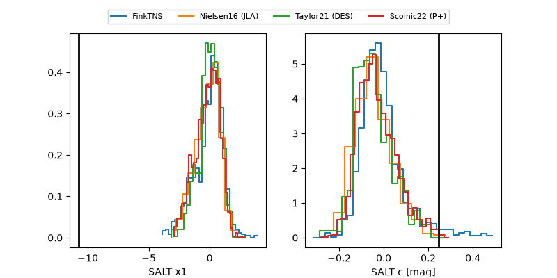

2026zee
Target 2026zee at 2026-09-16 14:25
Aliases and brokers:
FINK-ZTF: ztf.fink-portal.org/ZTF26abnvfzc
Lasair-ZTF: lasair-ztf.lsst.ac.uk/objects/ZTF26abnvfzc
ALeRCE-ZTF: alerce.online/object/ZTF26abnvfzc
YSE-PZ: ziggy.ucolick.org/yse/transient_detail/2026zee
TNS name: wis-tns.org/object/2026zee
Direct TNS query: direct search
alt names
ZTF26abnvfzc (ztf,fink_ztf)
2026zee (tns,yse)
Coordinates:
equatorial (ra, dec) = 37.9966,+15.57690
equatorial (HMS+DMS) = 02:31:59.17,+15:34:36.85
galactic (l, b) = (155.6622,-40.81829)
Flags:
TNS type: nan
peak dt: +32.3
Photometry:
last ztfg=20.46, ztfr=20.29
1 ztfg, 2 ztfr detections
Lightcurve

Visibility



Additional plots
